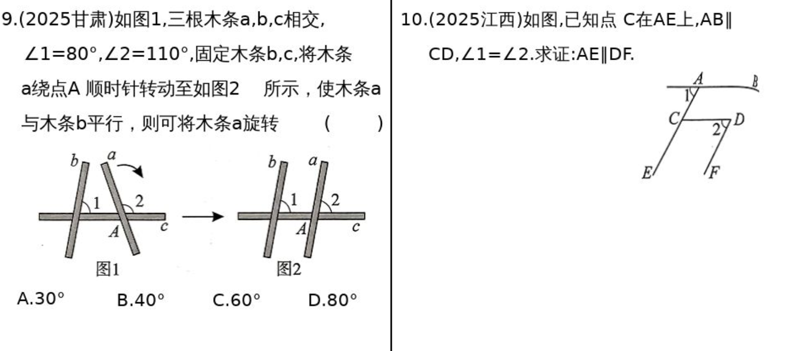
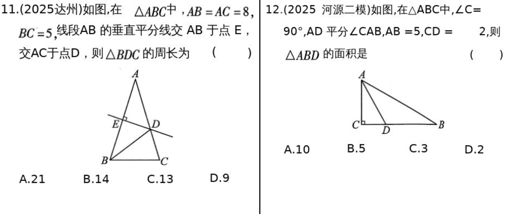
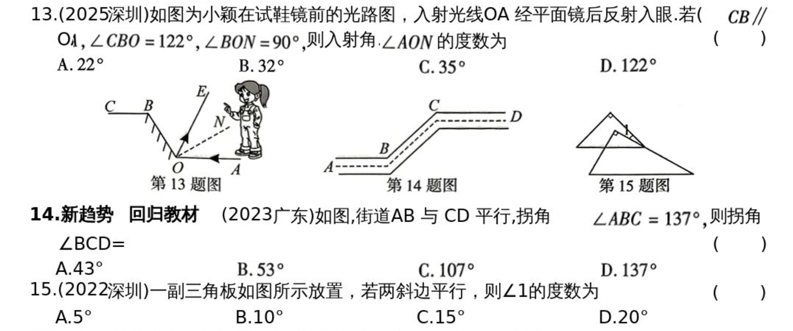
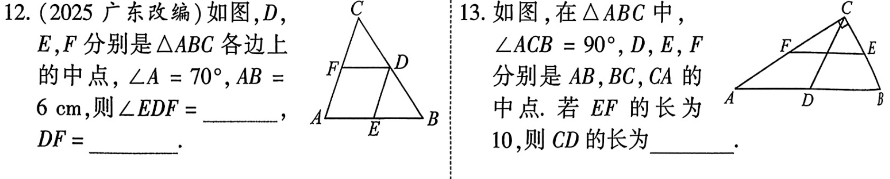
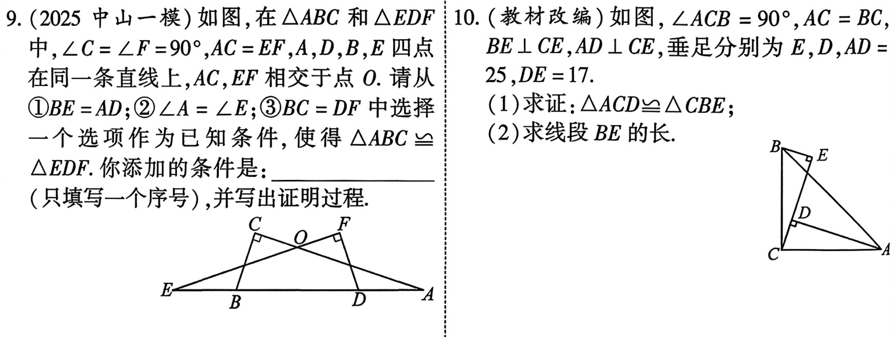
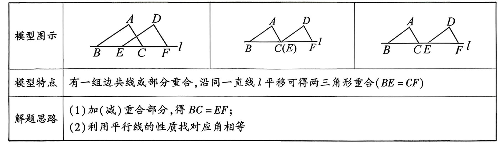
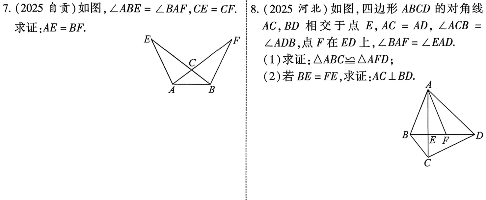
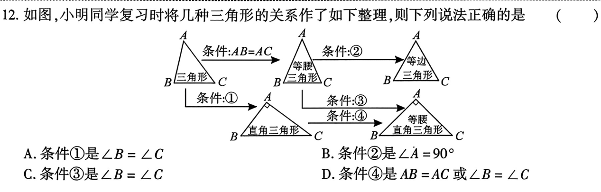

第17课 图形初步¶
知识点¶
知识点1 直线、射线、线段¶
| 直线公理 | 经过两点，有且只有一条直线 |
|---|---|
| 线段公理 | 两点之间，线段最短 |
| 两点间距离 | 连接两点间的线段的长度，叫做两点间的距离 |
知识2 角¶
| 概念 | 定义 | 性质 |
|---|---|---|
| 角 | 由有公共端点的两条射线组成的图形叫做角 | |
| 互为余角 | 如果两个角的和等于90°，那么这两个角互余 | 同角(或等角)的余角相等 |
| 互为补角 | 如果两个角的和等于180°，那么这两个角互补 | 同角(或等角)的补角相等 |
知识点3 相交线¶
| 性质 | |
|---|---|
| 对顶角 | 对顶角相等 |
| 垂直性质1 | 在同一平面内，过一点有且只有一条直线与已知直线垂直 |
| 垂直性质2 | 连接直线外一点与直线上各点的所有线段中，垂线段最短 |
| 点到直线的距离 | 直线外一点到这条直线的垂线段的长度，叫做点到直线的距离 |
知识点4 平行线¶
| 概念 | 在同一平面内，不相交的两条直线叫做平行线 |
|---|---|
| 公理 | 经过直线外一点，有且只有一条直线与已知直线平行 |
| 推论 | 如果两条直线都与第三条直线平行，那么这两条直线也相互平行 |
| 判定 | 同位角相等，两直线平行 内错角相等，两直线平行 同旁内角互补，两直线平行 |
| 性质 | 两直线平行，同位角相等 两直线平行，内错角相等 两直线平行，同旁内角互补 |
| 平行线间距离 | 定义:过平行线上的一点，作另一条平行线的垂线，垂线段的长度叫做两条平行线的距离 性质:两条平行线间的距离处处相等 |
知识点5 角平分线¶
- 角平分线上的点到角两边的距离相等
- 角的内部到角两边距离相等的点在角的角平分线上
知识点6 线段的垂直平分线¶
- 线段的垂直平分线上的点到线段两端的距离相等
- 到线段两端相等的点在线段的垂直平分线上
考点¶
考点1 平行线的性质¶

考点2 平行线的判定¶

考点3 角平分线与线段垂直平分线¶

试题¶


第18课 三角形与多边形¶
知识点¶
知识点1 三角形的边角关系¶
- 三角形的任意两边之和大于第三边，任意两边之差小于第三边
- 三角形内角和等于180°，外角和等于360°
- 三角形的一个外角等于与它不相邻的两个内角的和
知识点2 三角形的主要线段¶
- 三角形的角平分线，中线，高
- 三角形的中位线：三角形的中位线平行与第三边并且等于第三边的一半
知识点3 三角形的四心¶
| 心 | 定义 | 性质 | 位置 |
|---|---|---|---|
| 内心 | 三条角平分线的交点 | 到三条边的距离相等 是内切圆的圆形 |
在三角形的内部 |
| 外心 | 三边垂直平分线的交点 | 到三个顶点的距离相等 是外接圆的圆形 |
锐角三角形:在内部 直角三角形:斜边的中点 钝角三角形:在外部 |
| 重心 | 三条中线的交点 | 把每条中线分成2：1 | 在三角形内部 |
| 垂心 | 三条高的交点 | 锐角三角形:在内部 直角三角形:直角顶点 钝角三角形:在外部 |
一些推论¶
| 推论 | 具体 | 应用场景 |
|---|---|---|
| 内心等距性质 | 角平分线上的点到角两边的距离相等。 | 到角两边距离相等的点在角平分线上。 证明某点是内心、与内切圆有关的问题。 |
| 外心等距性质 | 外心到三角形三个顶点的距离相等。 | 证明三点共圆； 求外接圆半径； 直角三角形中“斜边中点到三顶点距离相等”。 |
| 重心 2:1 | 三角形的重心把每条中线分成 2:1 | 长度计算、比例问题、坐标题。 |
| 直角三角形的特殊结论 | 外心在斜边中点；垂心在直角顶点；斜边中点到三个顶点距离相等。 | |
| 四线必交于一点 | 判断交点、证明共点。 | |
| 内心与三角形面积 | \(S=\frac{1}{2}rP(S为三角形面积，r为内切圆半径，p为三角形周长)\) |
考场速记口诀¶
外心找边圆在外 内心分角圆在内 重心中线二比一 垂心三高要注意
知识点4 多边形的内角和公式，外角和¶
- 多边形的内角和为\(180^\circ\cdot(n-2)(n为大于2的整数)\)
- 任意多边形的外角和等于360°，正n边形的每个外角为\(\frac{360^\circ}{n}.\)
知识点5 正多边形的镶嵌¶
- 平面镶嵌的添加：在每个拼接点处，各多边形的内角之和为360°，且边长相等
- 用单一的正多边形铺地板是，只有等边三角形，正方形和正六变形可以镶嵌地板
考点1 等腰三角形的边与角¶

考点2 三角形的边与角¶

考点3 多边形的内角与外角¶

考点4 三角形的中线与中位线¶

考题¶

谢谢大家观看！！！¶
第19课 全等三角形¶
知识点1 全等三角形的定义¶
能完全重合的两个三角形叫做全等三角形
知识点2 全等三角形的性质¶
- 全等三角形的对应边、对应角相等；
- 全等三角形的对应角平分线、对应边上的中线、对应边上的高相等
- 全等三角形的周长相等，面积相等
知识点3 全等三角形的判定方法¶
- SSS：有三边对应相等的两个三角形全等
- SAS：有两边和他们的夹角对应相等的两个三角形全等
- ASA：有两个角和他们的夹边对应相等的两个三角形全等
- AAS: 有两角和其中一角的对边对应相等的两个三角形全等
- H L: 有斜边和一条直角边对应相等的两个直角三角形全等
知识点4 证明全等三角形的思路¶
$$ \begin{cases} \text{已知两边} \left{ \begin{aligned} &\text{1. 找夹角} \rightarrow SAS\ &\text{2. 找另一边} \rightarrow SSS\ &\text{3. 找直角} \rightarrow HL或SAS\ \end{aligned}
\right.\ \text{已知一边和一角} \left{ \begin{aligned} &\text{1.边为角的对边}\rightarrow找任一角 \rightarrow AAS \ &\text{2.边为角的邻边} \begin{cases} \text{找夹角的另一边} \rightarrow SAS\ \text{找夹角的另一角} \rightarrow ASA\ \text{找边的对角} \rightarrow AAS\ \end{cases} \ \end{aligned} \right.\ \text{已知两角} \left{ \begin{aligned} &\text{找夹边} \rightarrow ASA \ &\text{找角的对边} \rightarrow AAS \end{aligned} \right.
\end{cases}
$$
考点1 全等三角形的性质¶

考点2 全等三角形的判定¶


考点¶


谢谢大家观看
专题1 四大全等模型¶
模型1 平移型¶

模型1应用¶


模型2 轴对称型¶

模型2应用¶

模型3 旋转型¶

模型3应用¶

模型4 一线三等角型¶

模型4应用¶

谢谢大家观看！！！¶
第20课 特殊三角形¶
知识点1 等腰三角形¶
- 性质1：等边对等角，即等腰三角形的两个底角相等
- 性质2：三线合一，即等腰三角形顶角的平分线，底边上的中线，底边上的高互相重合
- 判定：
- 有两边相等的三角形叫做等腰三角形
- 有两个角相等的三角形叫做等腰三角形
知识点2 等边三角形¶
- 性质：
- 边：三边相等；
- 角：三角相等，都等于60°；
- 三线合一
- 有3条对称轴
- 判定：
- 三条边都相等的三角形是等边三角形
- 三个角都相等的三角形是等边三角形
- 有一个角是60°的等腰三角形是等边三角形
- 等边三角形的面积公式：
- \(S_{等边\triangle ABC}=\frac{1}{2}BC \cdot AD;\)
- \(S_{等边\triangle ABC}=\frac{\sqrt{3}}{4}AB^2.\)
知识点3 直角三角形¶
- 性质：
- 两锐角互余；
- 勾股定理：\(\because \angle C=90^ \circ,\therefore a^2+b^2=c^2;\)
- 斜边上的中线等于斜边的一半；
- 30°角所对的直角边等于斜边的一半。
- 判定
- 有一个直角的三角形叫做直角三线
- 勾股定理的逆定理：如果三角形中两个边的平方和等腰第三边的平方，那么这个三角形就直角三角形
- 一条边上的中线等腰该边的一半，则这个三角形是直角三角形
知识点4 等腰直角三角形¶
等腰直角三角形的两直角边相等，两个锐角都等于45°
考点1 等腰三角形的性质与判定¶


考点2 直角三角形、等腰三角形的性质与判定¶


考点3 等边三角形的性质与判定¶


考点¶

谢谢你观看
第21课 相似¶
知识点1 比例线段¶
四条线段a,b,c,d中，如果其中两条线段比等于另外两条线段的比，如\(\frac{a}{b}=\frac{c}{d}或a:b=c:d，那么这四条线段叫做比例线段，简称比例线段。\)
知识点2 平行线分线段成比例定理¶
- 三条平行线截
知识点3 相似的概念与性质¶
知识点4 相似三角形的判定¶
知识点5 相似三角形常用的基本图形¶
知识点6 位似的概念¶
考点1 平行线分线段成比例¶
考点2 相似的性质¶
考点3 相似的判定¶
考点4 位似、位似比、位似作图¶
考点5 相似的综合应用¶
考题¶
专题2 四大相似模型¶
模型1 A字模型¶
模型2 8字模型¶
模型3 一线三等角模型¶
模型4 手拉手模型¶
第22课 锐角三角函数¶
知识点1 锐角三角函数的定义¶
如图，在\(Rt_{\triangle}ABC中，\triangle C=90^\circ,则：\) \(正弦:\sin A=\frac{\angle A的对边}{斜边}=\frac{a}{c}\) \(余弦:\cos A=\frac{\angle A的临边}{斜边}=\frac{b}{c}\) \(正弦:\tan A=\frac{\angle A的对边}{\angle A的临边}=\frac{a}{b}\)
知识点2 特殊的锐角函数值¶
| \(\alpha\) | \(30^\circ\) | \(45^\circ\) | \(60^\circ\) |
|---|---|---|---|
| \(\sin \alpha\) | \(\frac{1}{2}\) | \(\frac{\sqrt{2}}{2}\) | \(\frac{\sqrt{3}}{2}\) |
| \(\cos \alpha\) | \(\frac{\sqrt{3}}{2}\) | \(\frac{\sqrt{2}}{2}\) | \(\frac{1}{2}\) |
| \(\tan \alpha\) | \(\frac{\sqrt{3}}{3}\) | \(1\) | \(\sqrt{3}\) |
知识点3 求出直角三角形所有未知边与角的过程叫解直角三角形¶
| 三边关系 | \(a^2+b^2=c^2\) |
|---|---|
| 两锐角关系 | \(\angle A+\angle B=90^\circ\) |
| 边角关系 | \(\sin A =\cos B=\frac{a}{c}\) \(\cos B=\sin A=\frac{b}{c}\) \(\tan A=\frac{a}{b},\tan B=\frac{b}{a}\) |
知识点4 等角的三角函数关系¶
若\(\angle 1=\angle 2,则\) \(\sin \angle 1=\sin \angle 2\) \(\cos \angle 1=\cos \angle 2\) \(\tan \angle 1=\tan \angle 2\)
考点1 求\(\sin A, \cos A ,\tan A\)的值¶
考点2 特殊角饿三角函数值计算¶
考点3 解直角三角形¶
考点¶
第23课 解直角三角形¶
知识点1 仰角与俯角¶
- 抬头看时，视线与水平线的夹角叫做仰角
- 低头看时，视线与水平线的夹角叫做俯角
知识点2 方位角¶
- 点A在O的______方向上；
- 点B在O的______方向上；
- 点C在O的______方向上；
坡角、坡度¶
如图，AB是一个斜坡 1. 剖面AB与水平线AC的夹角叫做坡角 2. 坡角的正切之叫做坡度，记住\(i=\tan\alpha=\frac{BC}{AC}\) 1. \(当i=1:\sqrt{3}时，\alpha=30^\circ\) 2. \(当i=\sqrt{3}:1时，\alpha=60^\circ\) 3. \(当i=1:1时，\alpha=45^\circ\) 4. \(当BC=2,AC=6，i=\frac{1}{3}\)